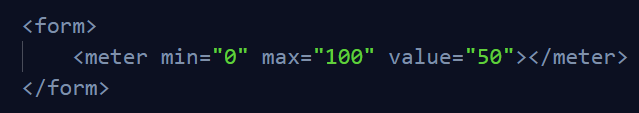

Se utiliza para agrupar elementos de un formulario que estén relacionados. Por ejemplo agrupar los inputs que piden los datos como el nombre, el apellido, la edad y en otro elemento fieldset agrupar datos como sus deportes favoritos, etc etc. De manera opcional lleva la etiqueta legend para título al fieldset.
Código de ejemplo de la etiqueta <fieldset></fieldset>Vista navegador de la etiqueta <fieldset></fieldset>
El borde que tiene la etiqueta fieldset por css se puede editar oquitar, al igual que casi todas las etiquetas de formularios.
Input de tipo file
Este input lo que nos permite es poder cargar archivos que podemos enviar a través del formulario. Conm HTML solamente es muy poco lo que se puede hacer, se necesita javascript para un mejor desempeño de este input, y de css para una mejor estilización. Cuando le damos click a un input de tipo file, lo que hace es abrir una ventana del sistema operativo para poder seleccionar un archivo.
<input type="file" />
vista navegador
<input type="file" />
código
Etiqueta meter
Esta etiqueta sirve para representar un valor dentro de un rango conocido. Utiliza distontos atributos que nos ayudan a pintar elementos en la barra. El ejemplo que da la MDN es de un contador de gasolina.
Sin atributos
<meter><meter/>
código sin atributos
<meter><meter/>
sin atributos (vista navegador)
Con atributos
<meter><meter/>
código con atributos

<meter><meter/>
con atributos (vista navegador)
El atributo value="" al estar declarado en un valor justo a la mitad, muestra la barra de color verde a la mitad también, de estar en otro lugar marcaría la pocisión que le asignemos.
Tienen otros atributos que nos permiten en función de cuanto esté cargada o vacía la barra cambiar el color de la barra. Estos atributos son: low="" que si el valor cae por debajo del que tiene declarado la barra se pondra de fondo rojo, higth="" que si value="" es mayor que low="" y menor que higth="" la barra cambiará el color de fondo a amarillo, y si supera el valor de hight="" la barra se cambiará a fondo verde, está también el atributo optimum="" que si el value="" está por encima del valor asignado a este atributo, también se cambiará a fondo verde.
<meter><meter/>
con atributos (vista navegador)
<meter><meter/>
con un valor menor a 20
<meter><meter/>
con un valor entre 20 y 75
<meter><meter/>
con un valor mayor a hight
Etiqueta progress
Esta etiqueta se utiliza para representar el trabajo de una tarea. Un ejemplo puede ser cuando subimos un archivo a internet y aparece una barra de carga, o cuando descargamos un archivo, esa barra de progreso se representa con la etiqueta progres. Se debe establecer un máximo por medio del atributo max="" y un value="", este atributo para que sea dinámico se manipula por javascript.
<progress><progress/>
Código de ejemplo de la etiqueta progress
<progress><progress/>
vista navegador
Etiqueta textarea
Esta etiqueta es muy común verla, porque permite introducir un texto mucho más largo que lo que permiten los inputs de tipo texto. Un ejemplo de uso puede ser cuando le pides una descripción de algo al usuario. Por defecto los editores de código añaden los atributos cols="" y rows="" para definirle un tamaño al textarea, cols="" corresponde a la cantidad de caracteres que se pueden escribir antes de que salte a la siguiente línea, y rows="" corresponde a la cantidad de líneas que tendrá el mensaje antes de que aparezca una barra de scroll al costado, pero por css podemos darle los estilos que queramos y prescindir de esos atributos, aunque si se usan son totalmente válidos también.
<textarea><textarea/>
vista navegador
El cuadrado rojo marca dos líneas inclinadas que son para cambiar el tamaño del textarea, pero también por css podemos manipular eso.